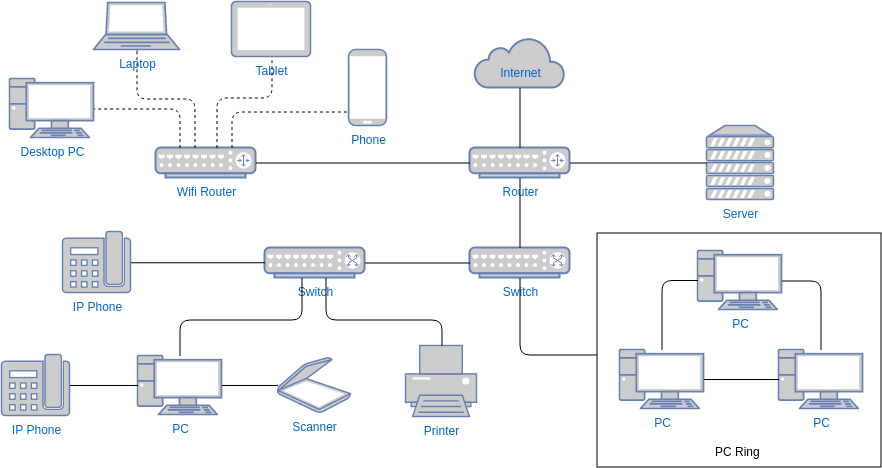
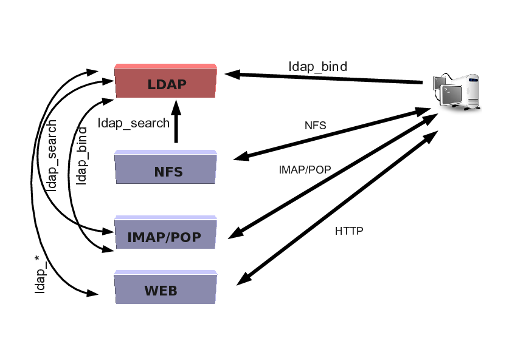
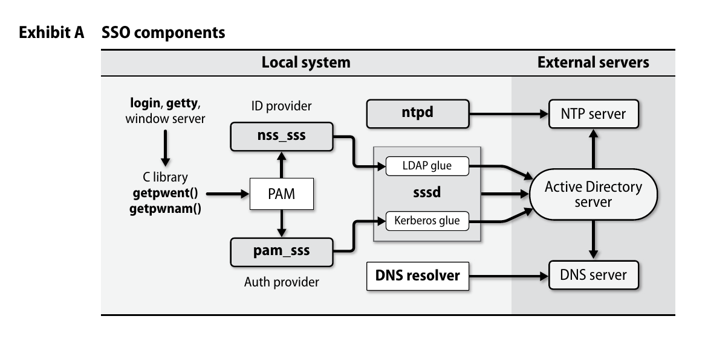
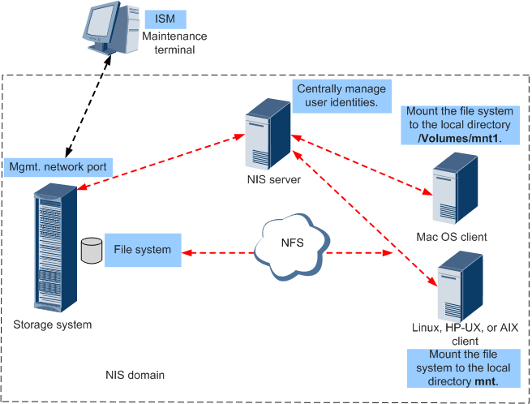
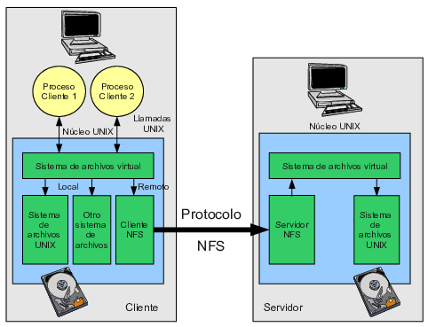

Tema 9: Gestión de las comunicaciones
Programación y Administración de Sistemas
(2023-2024)
1 Objetivos y evaluación
Objetivos
Describir la complejidad existente en la correcta gestión de una red para un sistema informático y las tareas de administración asociadas.
Nombrar los servicios de red más comunes en un sistema informático GNU/Linux y explicar su cometido.
Identificar el objetivo del sistema de ficheros distribuido Network FileSystem (NFS) y explicar su arquitectura.
Establecer el cometido de cada uno de los demonios de NFS.
Configurar NFS en el lado servidor y en el lado cliente.
Discutir sobre los posibles problemas de seguridad asociados a NFS.
Identificar el objetivo del servicio de información de red Network Information Service (NIS) y su funcionamiento.
Establecer el cometido de cada uno de los demonios de NIS.
Configurar NIS en el lado servidor y en el lado cliente.
Discutir sobre los posibles problemas de seguridad asociados a NIS.
Justificar la necesidad de SAMBA.
Configurar un servicio SAMBA que permita interactuar con sistemas operativos Microsoft Windows.
Evaluación
Cuestionarios objetivos.
Pruebas de respuesta libre.
Tareas de administración.
2 Conceptos básicos
Tareas de gestión de la red
 Fuente imagen visual-paradigm.com
Manejo de la red.
Monitorizar el tráfico
Añadir nuevos hosts.
Montar discos remotos o exportar los discos locales: NFS.
Servicio de información: usuarios, grupos, etc. (Single Sign-On).
Configurar y administrar otros servicios de red (web, correo, DNS, etc.).
Prevenir problemas de seguridad.
Enrutado de tráfico.
Programar estrategias de crecimiento de la red, para que la eficiencia pueda mantenerse.
…
Conceptos básicos
Labor mínima:
- Opciones de configuración de la red más importantes.
- Entender la configuración de la red actual.
- Dimensionado de la red y estrategias de crecimiento.
Repaso de conceptos:
- Interfaces de red
- IP: IP interna vs IP externa
- Hosts y DNS
- Pasarela
- Puerto
Demonios del sistema y red
A veces encontramos un superservidor que levanta demonios de uso poco frecuente. Antiguamente
xinetd, hoy reemplazado porsystemdy firewalls con esta funcionalidad.Algunos los podemos listar con sytemd:
systemctl --type=service --state=running
UNIT LOAD ACTIVE SUB DESCRIPTION
cron.service loaded active running Regular background program processing daemon
dbus.service loaded active running D-Bus System Message Bus
getty@tty1.service loaded active running Getty on tty1
ssh.service loaded active running OpenBSD Secure Shell server
systemd-journald.service loaded active running Journal Service
systemd-logind.service loaded active running User Login Management
systemd-timesyncd.service loaded active running Network Time Synchronization
systemd-udevd.service loaded active running Rule-based Manager for Device Events and Files
user@1000.service loaded active running User Manager for UID 1000
wpa_supplicant.service loaded active running WPA supplicant
LOAD = Reflects whether the unit definition was properly loaded.
ACTIVE = The high-level unit activation state, i.e. generalization of SUB.
SUB = The low-level unit activation state, values depend on unit type.
10 loaded units listed.EJERCICIO de conceptos básicos
- Consulta los datos básicos de la red de tu equipo y de tu máquina virtual. Puedes usar el comando
ip.- ip local, interna y externa
- configuración DNS
- pasarela
- prueba la ruta a algún dominio:
traceroute uco.es,traceroute stanford.edu. https://visualtraceroute.net/
- Lista los servicios del sistema:
systemctl --type=service
systemctl --type=service --state=running
# crear un alias
alias running_services='systemctl list-units --type=service --state=running'- ¿Cómo encontramos qué programa está escuchando en un puerto?
sudo lsof -i -P -n | grep LISTEN
sudo netstat -tulpn | grep LISTEN
sudo ss -tulpn | grep LISTEN
sudo lsof -i:22 ## see a specific port such as 22 ##
sudo nmap -sTU -O IP-address-HereEn Ubuntu:
resolvectl. En Windows:netstat -bano¿Cómo cambiarías la IP en Debian? (pista
/etc/network/interfaces)
Algunos demonios de red
/etc/init.d/networking script que activa la red en tiempo de arranque (también en /etc/systemd/network/ y /etc/init.d/network-manager).
ntpddemonio encargado de sincronizar la hora del sistema.dhcpddemonio encargado del servicio de Dynamic Host Configuration Protocol (servidor proporciona IPs privadas a las máquinas que se conecten).nameddemonio encargado del servicio de Domain Name System (servidor traduce nombres de dominio).sendmaildemonio encargado del correo electrónico.sshddemonio que permitessh(conexión remota segura).httpd,nginx,apache2servidor web.smbdservicio de compartición de ficheros con Windows.
Algunos demonios de red y systemd
Algunos de los demonios típicos de UNIX/Linux se van integrando como unidades de systemd, por ejemplo la sincronización de hora Network Time Synchronization es la unidad systemd-timesyncd.service e incluye su propia herramienta.
$ timedatectl
Local time: lun 2024-05-13 23:38:47 CEST
Universal time: lun 2024-05-13 21:38:47 UTC
RTC time: lun 2024-05-13 21:38:47
Time zone: Europe/Madrid (CEST, +0200)
System clock synchronized: yes
NTP service: active
RTC in local TZ: no3 Autenticación única
Sistemas de autenticación única en la UCO

Sistemas de autenticación única

4 NIS: Network Information System
NIS: conceptos básicos
Ficheros de configuración: en un entorno real, muchos ficheros de configuración son similares de una máquina a otra. /etc/passwd o /etc/shadow.
\(n\) máquinas \(n\) réplicas de los ficheros que gestionar:
Muy difícil.
Los cambios tardan en propagarse.
Network Information Service (NIS).
Todos los servicios acceden a una misma base de datos de configuraciones.
Permite centralizar la autenticación de servicios.
NIS: esquema ejemplo

NIS: limitaciones
NIS presenta inconvenientes/limitaciones (subsanados por LDAP) pero es más sencillo de desplegar que LDAP:
Sólo para una subred y no cifra los datos.
No permite establecer jerarquías de usuarios complejas.
Un cambio reconstruir todo y redistribuirlo.
Usuario del servicio \(\Leftrightarrow\) usuario sistema operativo.
NIS: conceptos básicos
Los ficheros de las bases de datos están en el equipo servidor y contienen información como:
login names / passwords / home directories
/etc/passwd.group information
/etc/group.…
El servidor distribuye esta información a los clientes.
En el lado servidor:
Los ficheros se preprocesan para convertirlos a un formato binario con hashing (Berkeley DataBase) (mejor eficiencia).
Dominio NIS clave para poder localizar al servidor (p.ej.
pas.esopas_nis).Los ficheros de las BDs residen a partir del directorio
/var/yp/, en un subdirectorio con el nombre del dominio.
5 NFS: Network File System
NFS: servicio de archivos compartidos
Posibilita que un Sistema de Ficheros, que físicamente reside en un host remoto, sea usado por otros ordenadores, vía red, como si fuese un sistema de ficheros local.
Disponible en sistemas Unix/Linux y Windows (desde 2008).
En el servidor se indica:
Qué sistemas de ficheros se exportan Se puede exportar un sistema de ficheros completo o un directorio.
A qué ordenadores se exportan (se les permite acceder) a un equipo concreto o a todos los equipos de una red.
Condiciones para la exportación.
Los equipos cliente montan el sistema de ficheros remoto con la orden
mounty acceden a los datos como si fuesen locales- Incorporan, en cada operación, una cookie secreta que se les manda cuando montan el directorio.
NFS: servicio de archivos compartidos
Al exportar un fichero, se exporta su nodo-i y sus bloques de datos ¿propietario y grupo propietario?. ¿Qué pasa si en el equipo cliente no existe ese usuario o ese grupo propietario?.
Un equipo puede ser servidor y cliente NFS al mismo tiempo.
Versiones:
\(NFS\le 2\): operaciones de escritura bloqueantes (en espera de un ACK).
\(NFS=3\): esquema de coherencia que permite escrituras asíncronas sin peligro [mayor eficiencia`.
\(NFS=4\): incorpora funcionalidades adicionales (montaje, bloqueo, autenticación) dentro del propio protocolo.
Organización y arquitectura
Organización:
Se basa en el protocolo Remote Call Procedure (RPC), para encapsular llamadas al servidor cuando se piden archivos remotos (de manera transparente para el usuario).
Stateless (v2/v3): el servidor trabaja sin mantener información del estado de cada uno de los clientes (ficheros abiertos, último fichero o última posición escrita).
Necesidad de bloquear archivos accedidos concurrentemente por varios clientes demonios independientes.
El cliente es responsable de mantener la coherencia.
Statefull (v4): el servidor trabaja manteniendo el [estado` de las operaciones (ej. 1 y 2).
NFS tiene bastantes problemas de seguridad (UID y GID locales, falsificación de direcciones IP, ficheros que pertenecen a
root...) uso de [herramientas adicionales.
Organización y arquitectura

NFS: configuración del lado servidor
/etc/exportsFichero en el que se indica qué SFs se exportan, bajo qué condiciones y a qué ordenadores./usr/sbin/exportfsActualiza la información de los SFs exportados y muestra un listado con dicha información (realiza unrestartde los demoniosnfsdyrpc.mountd):-rre-exporta los directorios indicados en/etc/exports.-aexporta o deja de exportar/etc/exports.-vmuestra los directorios exportados y las opciones.
/usr/sbin/showmountinformación en un servidor NFS:-aclientes conectados y directorios utilizados.-dlistado de los directorios montados.
NFS: configuración del lado servidor
Demonios en el lado servidor
rpcbindoportmapFacilita la conexión entre el cliente y el servidor mediante las llamadas RPC. Tiene que estar lanzado para que NFS funcione.nfsdImplementa, en el nivel de usuario, los servicios NFS. La principal funcionalidad está implementada por el módulo del kernelnfsd.ko. Los threads del kernel aparecen como[nfsd], al ejecutarps aux.rpc.mountdManeja las peticiones de montaje de directorios de los clientes, comprobando la petición con la lista de sistemas de ficheros exportados.
/etc/init.d/nfs-kernel-server Lanza rpc.mountd y rpc.nfsd.
NFS: configuración del lado servidor
/etc/exports Para configurar qué “directorios” se exportan, bajo qué condiciones y a qué equipos ruta dirección(opción):
rutaes el nombre del directorio a exportar vía NFS.direccióna quién es exportado (IP, dirección de red, etc.).opciónespecifica el tipo de acceso al directorio:rwóroModo lectura-escritura o sólo lectura.root_squashMapea los uid/gid 0 a los uid/gid anónimo (nobody o nfsnobody) (controlar al root cliente).no_root_squashNo hacer lo anterior ([peligro`).all_squashMapea todos los usuarios al usuario anónimo.anonuidóanongidEstablecer eluido elgiddel usuario al que realizar el mapeo, distinto del usuario anónimo.
NFS: configuración del lado cliente
- La propia orden
mountpermite montar el SF remoto:
$ mount -t nfs -o opciones_nfs 191.168.6.10:/home /datos-t nfs: tipo de SF.191.168.6.10:/homeservidor y directorio remoto a montar.Si en el fichero
/etc/fstabse indica el listado de los sistemas de ficheros remotos a montar, el punto de montaje y las opciones, el montaje se puede realizar en tiempo de arranque:
# Contenido /etc/fstab
191.168.6.10:/home /datos nfs defaults,opciones_nfs 0 0NFS: configuración del lado cliente
Opciones para
mount:softSi el servidor NFS falla durante un tiempo, las operaciones que intentaban acceder a él recibirán un código de error.hardSi un proceso está realizando una operación de E/S con un fichero vía NFS y el servidor NFS no responde, el proceso no puede ser interrumpido o matado (no acepta la señal KILL) salvo que se especifique la opciónintr. Siempre que usemosrwdeberíamos usar hard, para no dejar el SF remoto inconsistente.intrSe permite señales de interrupción para los procesos bloqueados en una operación de E/S en un servidor NFS.softva en contra de la filosofía de NFS.bgSi el montaje del SF remoto falla, que siga intentándolo en background, hasta que lo consiga o desista porque se han hechoretryintentosretry=nNº de intentos que se deben hacer para montar el SF remoto, antes de desistir si la conexión falla.timeo=nTiempo a esperar entre cada intento de montaje si la conexión falla.
NFS: ejemplos
Ejemplos en el [servidor(fichero/etc/exports`):
/home 191.168.6.15(rw,root_squash) 191.168.6.16(rw,no_root_squash)
/import 191.168.8.20(rw,all_squash)
/tools 191.168.6.0/24(ro,all_squash,anonuid=500,anongid=100)Ejemplos en el cliente, en el fichero /etc/fstab:
julieta:/home /home nfs defaults,rw,bg,hard,intr 0 0
julieta:/import /nfs/import nfs defaults,rw,bg,hard,intr 0 0
191.168.6.10:/tools /nfs/tools nfs defaults,ro,bg,soft 0 0También se puede realizar el montaje de forma manual:
$ mount /home #(configurado /etc/fstab)
$ mount /nfs/import #(configurado /etc/fstab)
$ mount -t nfs -o rw,bg,hard,intr julieta:/home /home
$ mount -t nfs -o rw,bg,hard,intr julieta:/import /nfs/import
$ mount -t nfs -o ro,soft,bg 191.168.6.10:/tools /nfs/tools6 SAMBA
SAMBA: necesidad
Entre maquinas GNU/Linux, es posible usar el protocolo NFS para compartir ficheros.
Presenta una serie de inconvenientes:
Problemas de seguridad.
No existe una buena implementación libre de NFS para equipos Windows.
Lleva menos trabajo utilizar el protocolo utilizado por las maquinas Windows.
Este protocolo, llamado Common Internet FileSystem (CIFS), tiene implementaciones sobre un gran numero de plataformas.
Existe una implementación libre de este protocolo llamada SaMBa, que permite utilizarlo sobre servidores GNU/Linux
SAMBA: introducción
¿Qué es?
Es un sistema de compartición de archivos e impresoras en red.
Permite la interconexión de sistemas heterogéneos entre sí (GNU/Linux y Windows).
Los clientes Windows tendrán la sensación de estar ante un servidor Windows NT.
Controlar el acceso de clientes Windows a servicios de red Windows o Unix.
Protocolos:
SMB (Server Message Block): Compartir los recursos.
CIFS (Common Internet File System): Implementación mejorada de SMB.
NetBIOS (Network Basic Input/Output System): Servicio de nombres:
Nombres lógicos en la red.
Sesiones entre los nombres.
SAMBA: introducción
¿Cuándo es útil?
No quieres pagar un servidor Windows NT para obtener las funcionalidades que este proporciona.
Homogeneizar la red local ante clientes Windows y Unix.
Compartir impresora entre clientes Windows y Unix.
Utiliza dos demonios:
smbdPermite la compartición de archivos e impresoras sobre una red SMB y proporciona autentificación y autorización de acceso para clientes SMB.nmbdSe ocupa de anunciar servicios, es decir, informa a las máquinas en la red de cuales son los servicios disponibles.
Podemos configurar SAMBA mediante:
El fichero
smb.conf.El front-end SWAT (no se recomienda, poco seguro).
7 Configuración
SAMBA: configuración
A través de
/etc/samba/smb.confQué recursos del sistemas vas a compartir y que restricciones deseas poner en ellos.
Consta de varias secciones distintas que empiezan por
[nombre-recurso].[global]Define variables de carácter general y aplicables a todos los recursos.[homes]Permite a los usuarios remotos acceder a su directorio personal desde su máquina local (ya sean clientes Windows o Linux), pero han de tener cuenta en la máquina servidora.[printers]Para compartir impresoras.
Inicio y parada de Samba con
/etc/init.d/samba ``start/stop
8 Referencias
Referencias
Evi Nemeth, Garth Snyder, Trent R. Hein, Ben Whaley y Dan Mackin. Unix and Linux system administration handbook. Capítulo 17. Single Sign-On, Capítulo 21. The Network File System, Capítulo 22. SMB. Addison-Wesley. 5th Edition. 2018.
Aeleen Frisch. Essential system administration. Capítulo 10. Filesystems and disks. O’Reilly and Associates. Tercera edición. 2002.